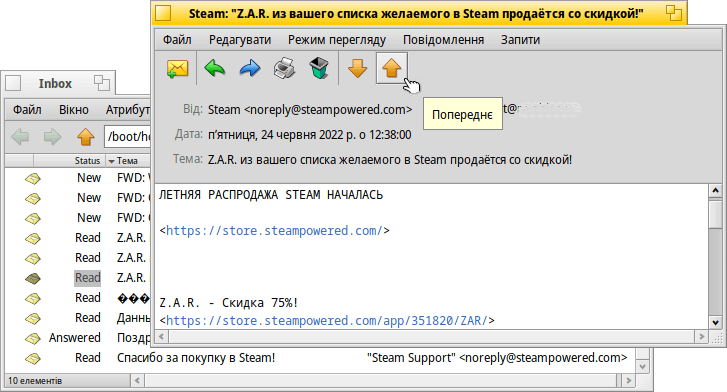
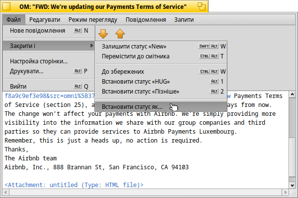
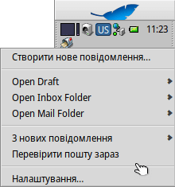
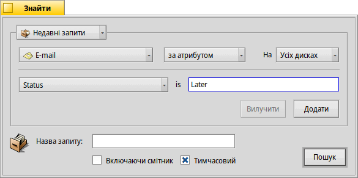
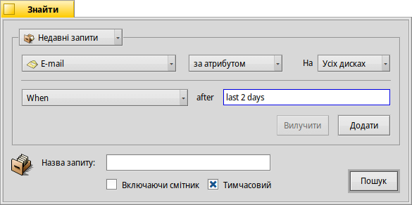
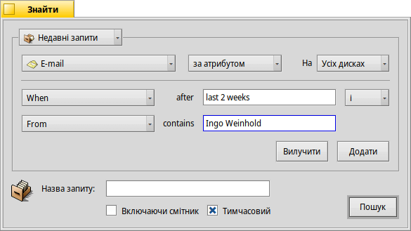
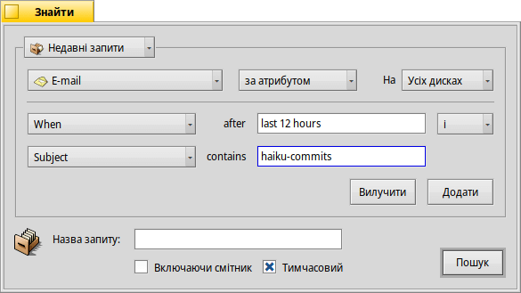

| Індекс |
|
Поштова система Haiku Використання статусів, які визначив користувач Використання запитів Поради та Рекомендації |
Майстер-клас: Управління поштою
На цьому навчальному заході ми розглянемо, як управлятися з електронною поштою у системі Haiku. Передбачається, що поштові сервіси правильно налаштовані за допомогою панелі налаштувань E-Mail і Ви знайомі з основними можливостями програми Mail (Пошта).
 Поштова система Haiku
Поштова система Haiku
Якщо Ви перейшли на Haiku з інших операційних систем, Ви, ймовірно, звикли до великих програм, таких як MS Outlook або Thunderbird від Mozilla. Їх потрібно налаштовувати, вводячи всю інформацію про адреси поштових серверів тощо і вони використовують власну базу даних контактів. Вони дбають про надсилання та отримання електронних листів і зберігають їх у великому спеціальному файлі.
Зміна поштового клієнта може бути клопіткою процедурою, адже доволі часто доводиться експортувати/імпортувати та конвертувати дані. Використання декількох клієнтів паралельно, щоб перевірити, що ще доступно, також не позбавлене певних труднощів.
Поштова система Haiku відрізняється від інших. Вона складається з окремих невеликих модулів.
Існує програма mail_daemon, яка відповідає за зв'язок з Вашими поштовими серверами. Панель налаштуваннь E-Mail – це єдине центральне місце для настройки Ваших облікових записів поштових скриньок, наприклад, частоти їх перевірки.
Кожне отримане або надіслане поштове повідомлення зберігається як один файл електронної пошти з інформацією про заголовок (наприклад, Відправник, Тема, Дата) і статус (наприклад, «New», «Replied», «Sent») в атрибутах BFS. Це дозволяє шукати/фільтрувати їх за допомогою швидких запитів Haiku.
Оскільки кожне поштове повідомлення зберігається в окремому файлі, переглядати їх стає так само просто, як переглядати папку (або результат запиту) із зображеннями за допомогою програми ShowImage. Залишивши вікно Tracker відкритим, Ви можете переходити між файлами за допомогою кнопок попередє/наступне, щоб вибрати повідомлення для перегляду.
Оскільки це незалежні файли, використання інших програм для перегляду, окрім програми Haiku Пошта, не викликає жодних проблем.
Відповідно, створення нового поштового повідомлення призводить до створення ще одного файлу; цей файл передається демону mail_daemon, який подбає про його відправлення. Управління контактами перенесено до програми People.
Якщо коротко, то там, де інші поштові клієнти роблять все, від зв'язку з поштовими серверами до перегляду всіх Ваших листів та надання інструментів для їх пошуку і фільтрації, Haiku використовує ланцюжок менших інструментів і загальне управління файлами:
Програма mail_daemon відправляє/отримує поштові повідомлення та зберігає їх як звичайні файли.
Вікна Tracker та запити шукають і показують файли електронної пошти.
Програма Пошта допомагає переглядати поштові повідомлення та створювати нові на основі загальносистемної програми управління контактами People.
Використання Tracker та запитів для обслуговування пошти надзвичайно потужна ідея. Досвід, який Ви отримаєте, можна перенести на будь-яку іншу проблему, пов'язану з файлами. Будь то зображення, музика, відео, контакти чи будь-які інші документи, використання Tracker є основою управління файлами.
Крім того, вдосконалення у будь-якій із цих системних областей приносять користь не лише електронній пошті, але й усім програмам, які їх використовують.
Використання статусів, які визначив користувач
Коли Ви переглядаєте нові повідомлення, можливо, Ви захочете повернутися до деяких з них пізніше, щоб обміркувати їх більш грунтовно. Якщо вибрати у меню пункт , то статус повідомлення не змінюється і воно надалі буде вважатись «новим повідомленням». Отже, повідомлення мають тенденцію накопичуватися…
Звичайно, можна просто почати писати відповідь і зберегти її як чернетку. Але якщо Ви не плануєте писати відповідь, а просто хочете перечитати лист пізніше, це не ідеальний варіант.
Краще скористайтеся командою , щоб створити новий статус і використовувати його для категоризації повідомлень. Наприклад, Ви можете створити статус «Пізніше» і відповідати на повідомлення, коли матимете більше часу.
Або використовувати різні статуси для конкретних проектів. Наприклад, я створив статус «HUG» (для «Haiku user guide»), під яким збираю повідомлення стосовно змісту, коммітів, цікавих ідей, зміни коду та інших важливих аспектів, які можуть вплинути на зміст посібника.
У будь-якому випадку, намагайтеся, щоб назва статусу була короткою. Таким чином, назва завжди буде поміщатися у стовпчику «Статус» вікна Tracker звичайної ширини.
Вам не обов'язково відкривати поштове повідомлення у програмі Пошта для встановлення статусу. За допомогою доповнень Tracker Mark as Read і Mark as… Ви можете вибрати один або декілька файлів повідомлень і встановити їхній статус одним рухом.
Використання запитів
Звісно, Ви вказуєте папку для зберігання всієї електронної пошти, відкриваєте її – і вуаля, там уся Ваша пошта. Але з часом папка стає переповненою і відображення її вмісту буде займати все більше часу, оскільки тисячі файлів та їхніх атрибутів потрібно аналізувати та сортувати. Крім того, здебільшого Вас не дуже цікавлять листи нігерійських принців дворічної давнини та їхні проблеми зі спадщиною…
Запити, на допомогу!
Використовуючи запити, Ви можете звузити перегляд Ваших листів. Власне, значок поштової скриньки на панелі задач Deskbar використовує запити.
Підменю виконує запит статусу «Draft», який встановлюється програмою Пошта при збереженні повідомлення.
Підменю та – це просто посилання на звичайні папки.
Підменю показує результати запиту, який шукає повідомлення зі статусом «New» (цей же запит, до речі, використовується для зміни значка поштової скриньки, щоб показати що є нові повідомлення).
Ви можете додати власні запити (або папки, програми, сценарії тощо) до цього контекстного меню, помістивши їх або посилання на них у каталог ~/config/settings/Mail/Menu Links.
Приклади запитів
Ось декілька прикладів використання запитів:
|  |  |
| Шукає усі поштові повідомлення зі статусом «Later», який визначив користувач. | Шукає усі поштові повідомлення за останні 2 дні. |
|  |  |
| Шукає усі листи від Ingo Weinhold за останні 2 тижні. | Шукає усі пости зі списку коммітів Haiku за останні 12 годин. |
Поради та Рекомендації
Якщо Ви збережете запит не як «Запит» а як «Шаблон запиту», то при його виклику буде відкриватися не вікно результатів а вікно «Знайти». Таким чином, ви можете легко змінити рядок пошуку, наприклад, для теми або відправника або змінити граничний термін пошуку з «2 днів» на «3 дні».
Активація опції «Включити випереджаючу фільтрацію» на панелі налаштуваннь Tracker дозволяє дуже швидко відфільтрувати результат запиту ще глибше. Часто достатньо запросити усі листи за останні 3 дні, а далі використовувати випереджаючу фільтрацію. Великою перевагою є те, що Вам не потрібно точно вказувати, який саме атрибут шукати, оскільки при фільтрації враховуються всі відображені атрибути.